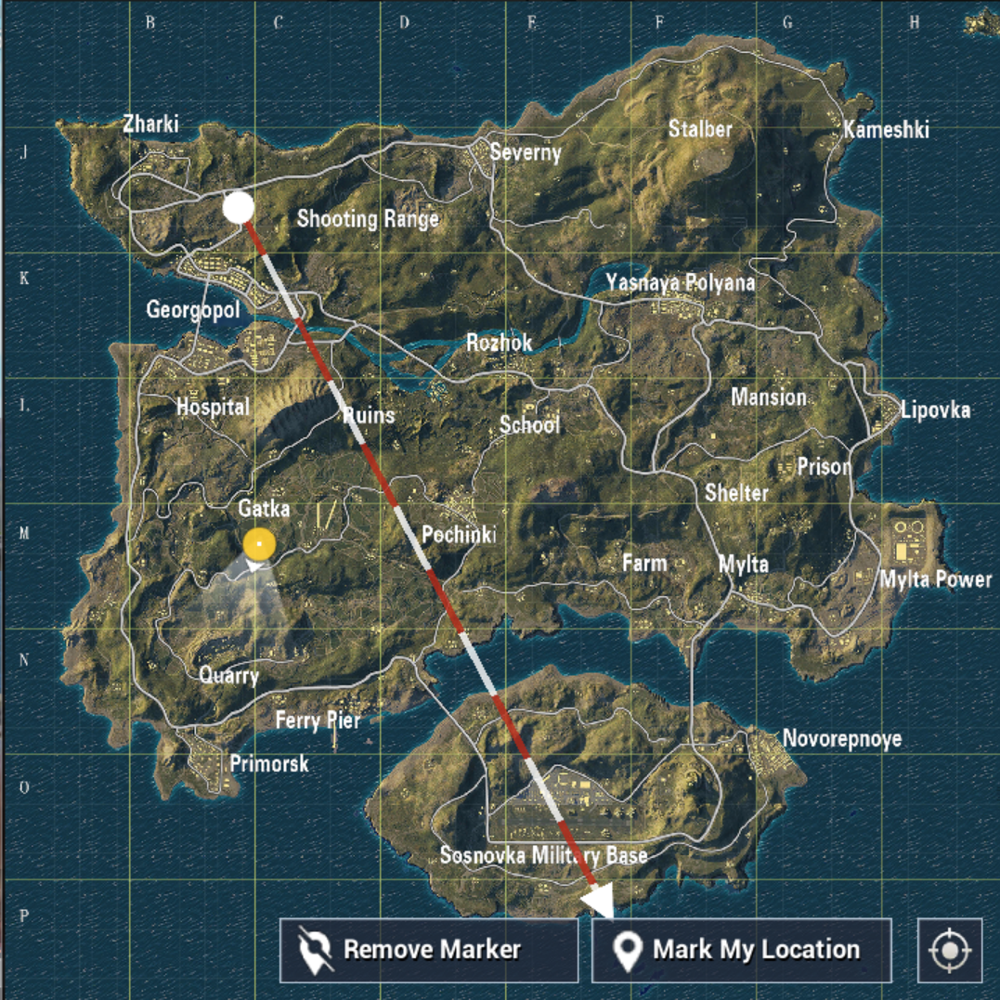

MAP
Erangel is a fictional island in the black sea abandoned near Russia where a military occupation was controlling it. The military occupation tested chemical/biological experiments on the local populace. After a resistance attack on a biological facility, the island had to be abandoned.
Erangel was originally occupied by Soviet forces from the 1950s onwards and was used as a military testing facility, which explains the military base as well as the hospital and storage facilities. A local resistance movement fought to reclaim the island which eventually lead to the island becoming abandoned. The electrical field seen wreaking havoc on the island is powered by electrical emitters which were used to contain towns that were showing signs of revolting against the Soviet forces.

ROYALE PASS SEASON 1
- A brand new feature!
- Season 1 of Royale Pass starts in mid-June. It will be available for purchase for all players.
- Complete daily and weekly missions to earn points and increase your rank. Complete a certain number of missions every week for additional crates.
- Reach a new Royale Pass rank to unlock its rewards. Players with a busy schedule have the option to purchase ranks directly to unlock rewards.
- An elite version of the Royale Pass is also available. Purchasing the Elite Royale Pass unlocks elite missions to earn more points and collect additional rewards for each rank.
FIRST PERSON PERSPECTIVE
- Added 1st person perspective variation to Classic Mode.
- First person perspective has its own tier system.
FIXES
- Fixed 8x scope and vehicle camera bugs in Spectator Mode.
- Fixed choppy voice chat bugs and Bluetooth headset disconnect bugs.
- Improved UI and vehicle sound effects.
- Improved sound mixing when firing indoors.
WEAPONS
- Assault Rifles
- Submachine Guns
- Sniper Rifles
- Light Machine Guns
- Shotguns
- Pistols
- Melee Weapons
VEHICLES
- Buggy - Carries 2.
- UAZ (Open Top) - Carries 4.
- UAZ (Closed Top) - Carries 4.
- Sidecar Motorcycle - Carries 3.
- PG-117 (Water) - Carries 4.
ARCADE MODE
- 100 players enter a smaller zone with triple weapon spawns.
- Matches last 20 minutes.
- Since this is Arcade Mode, it does not impact rank.
ANTI CHEATING MEASURES
This new anti-cheat feature will block various programs that "hook into" the game files to alter the game. This includes third-party programs like ReShade, which is used for improving the graphics and visuals in PUBG. Even programs that do not grant players an unfair advantage may be blocked if they “behave like cheats.